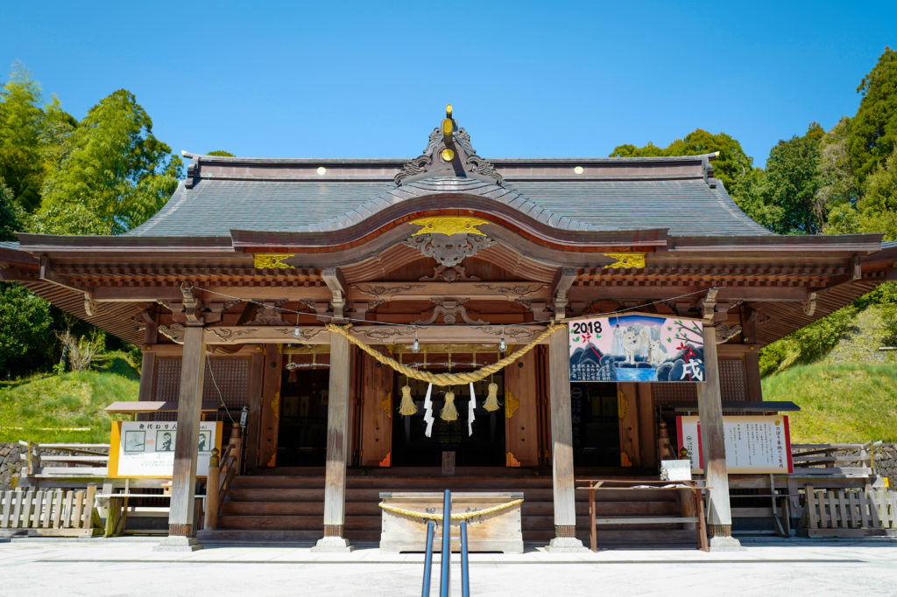

都農神社（Tuno-jinja）

住所
〒889-1201
宮崎県児湯郡都農町川北13294
旧国名
日向国一宮
御祭神
大己貴命（おほなむちのみこと）別名：大国主命（おおくにぬしのみこと）
都農神社について
都農町一帯には縄文時代から古墳時代にいたる遺跡が多数残っており、都農神社も土地の守護神として古来から祭祀（さいし）されていたと思われます。
社伝によると神武天皇が東遷（とうせん）に向かう際に祭祀を行った場所とされ、さらに神功皇后が三韓征伐に際して船団の守護神として祀り、
凱旋後に社殿を建立したのを起源とすると伝えられています。
その後は、在地領主からも崇敬を受け、戦国期には伊東義祐（いとうよしすけ）によって社殿が造替（ぞうたい）され、さらに江戸時代には歴代の高鍋藩主から崇敬され、
社殿造営がしばしば行われました。
お祭り
『例大祭』・・冬祭りは12月4,5日、夏祭りは8月1,2日に行われます。神輿や太鼓台が「チョーサイナ、ソーラヤーレ」の掛声とともに町内を練り歩き、
「ケンカ太鼓台」などで大いに賑わいます。殖産農耕、漁業航海、縁結び、子孫繁栄など大己貴命（おほなむちのみこと）のご神徳を祈願します。